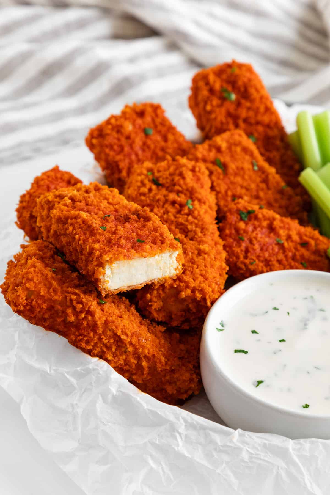

What are Baked Buffalo Tofu Wings?

Ingredients
- 1 lb extra firm or super firm tofu
- 6 tbsp cornstartch, arrowroot, or tapioca starch
- 1/4 cup plant milk
Bread Crumb Mixture
- 1 cup panko style bread crumbs
- 2 tbsp olive oil
- 1/2 tsp paprika
- 1/2 tsp salt
- freshly ground black pepper
- 1 tbsp fresh minced parsley
Buffalo Sauce
- 6 tbsp red cayenne pepper hot sauce (Franks RedHot workds best)
- 3 tbsp vegan butter
- 1/8 tsp granulated garlic
- 1/8 tsp salt
Steps
- Preheat the oven to 425 ºF and lightly grease a large rimmed baking sheet.
- If using extra-firm tofu press out the extra water: Slice your tofu into 6 width-wise slabs and wrap in a lint-free towel or paper towel. Place some weights over the wrapped tofu, like a heavy cast iron skillet or books atop a baking sheet. Let drain for about 20-30 minutes before continuing.
- Cut your tofu into 18 'wings' or ~1/2" sticks. Cut the block of tofu into 6 slices width-wise if you haven't already for pressing, then slice each of those slabs into 3 slices lengthwise.
- Put the cornstarch (or arrowroot or tapioca starch) in one bowl, the plant milk in a second bowl, and mix together the bread crumb mixture in a third bowl. Pour some of the bread crumb mixture onto a plate.
- Dip each tofu 'wing' into the starch, followed by the milk, then roll in the breadcrumbs on the plate. Place the wing onto the prepared baking sheet and repeat with the remaining 'wings.' Use one hand for the starch and bread crumbs and your other for the milk to keep breading from clumping on your fingers. Add more of the breadcrumb mixture to the plate as needed.
- Bake the prepared tofu at 425 ºF for 25 minutes, flip, then bake an additional 10-15 minutes until the tofu wings are nice and crispy.
- While they're baking, make the buffalo sauce. Melt the vegan butter and stir in the hot sauce, granulated garlic, and salt.
- Put the tofu wings in a large mixing bowl and toss with the buffalo sauce to coat. Serve immediately.
- Leftover buffalo tofu wings can be re-crisped in the oven.